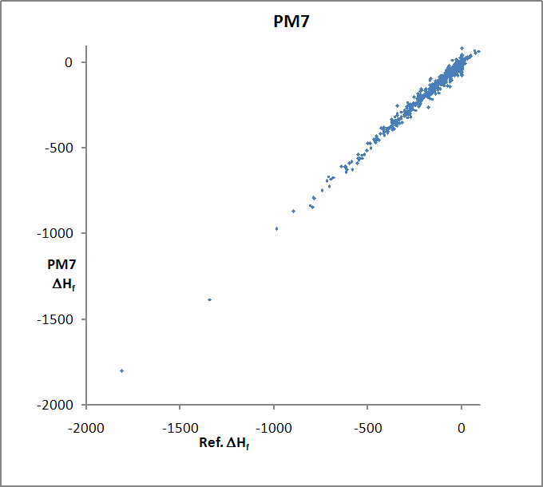
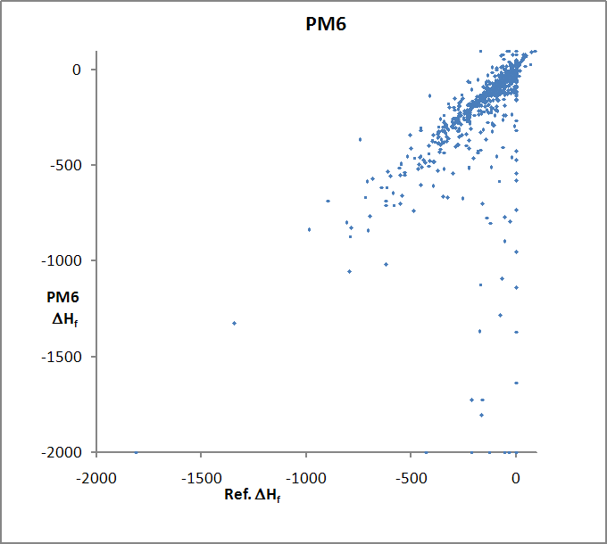

(Home - Accuracy - Manual - Individual solids)


All values in Kcal/mole. 671 entries. Some values for PM6-D3H4 were outside the graph boundaries; these have been reset to the boundary. The sharp cutoff in the distribution of heats of formation in PM6-D3H4 at 0 kcal/mol is due to the small number of solids with positive heats of formation - most elements are solids, and by definition have a heat of formation of zero.